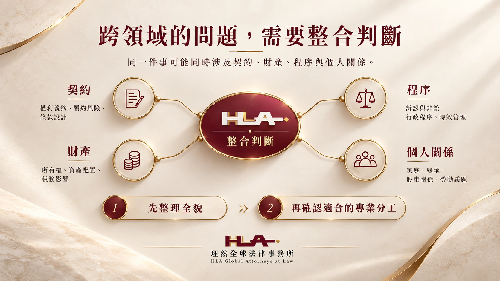

PRACTICE AREAS
專業領域：對應不同法律挑戰
依您正在面對的情境，找到最貼近的法律服務。
理然的專業領域不是彼此孤立的八個分類，而是一套可以彼此串接的法律服務網絡。企業案件可能同時進入公司治理、商務契約、勞動與訴訟；個人資產爭議可能牽涉不動產、繼承、債權與刑事問題；科技與跨境案件也經常與企業、智慧財產及資料治理相互重疊。我們依案件實際需求組合不同專業視角，避免只用單一領域的答案處理跨領域問題。
顯示 8 個專業領域
八大專業領域


CROSS-DISCIPLINARY
跨領域的問題，需要整合判斷
同一件事可能同時涉及契約、財產、程序與個人關係。我們先整理全貌，再確認適合的專業分工。

GET STARTED
從哪一步開始？
- 01 / START
選擇議題
從八大領域選一個最貼近的方向；一個問題也可能同時涉及不同領域。
- 02 / START
整理文件
記下事件的先後順序，保留契約、通知與重要往來，標註尚不確定之處。
- 03 / START
預約初談
說明目前最需要決定的事與希望達成的結果，由團隊確認下一步。
整理諮詢摘要 ↗
NEXT STEP / HLA
還不確定屬於哪個領域？
先說明情況，再一起辨識問題。